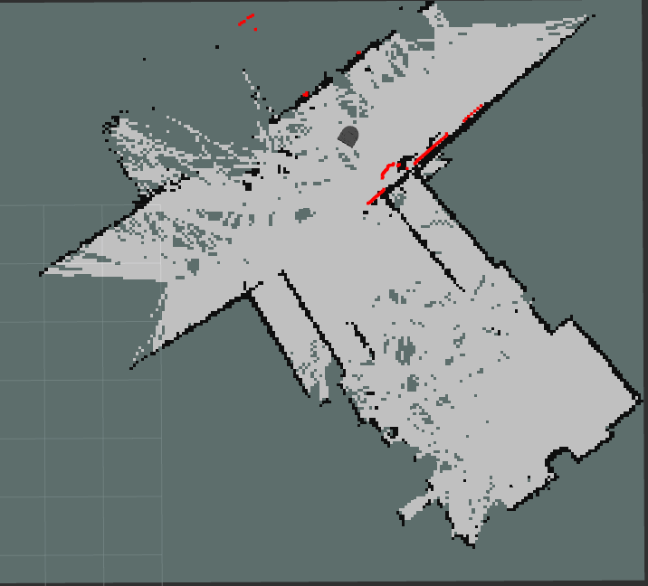

Milestone 1
For the first milestone, we wanted to explore the existing SLAM libraries and create an initial working development environment. Additionally, we also wanted to research approaches to path planning and pick an algorithmic approach.
SLAM
We downloaded the ROS slam toolbox that uses information from the odom and scan topics to implement a SLAM algorithm. We tested this out in a simulator with the Neato, and afterwards got it to work well on the physical Neato in the MAC. Here is an example of a map of the hallway:

SLAM Exploration Path Planning
When the robot first starts out, it does not have a map of the surrounding area. A map will eventually be created using SLAM, but for this map to be created, the robot needs to explore its environment. This will be done by directing the robot to pathfind to different frontiers, or delineated lines between open and unexplored areas (respectively white and grey-blue on the SLAM map above). The algorithm will prioritize frontiers that are larger and/or closer to the robot, and the pathfinding to these frontiers will be done using a standard algorithm like A*.
Coverage Path Planning
Once we have generated a map of the space, we want the Neato to drive and cover all the area as efficiently as possible, so the entire floor is cleaned (in spirit). There are many approaches to do this, such as a spiral around the room, kind of like mowing the lawn. We decided to use Boustrophedon Decomposition (BD). This takes a discrete map, creates sections of the floor between the obstacles, and drives over each section with "S"s before moving onto the next section. Example:

Taking a discrete map, we will section it using BD. We will then use A* to move between two sections to the next step. Here's an example of the process on an actual cleaning robot simulation:

Setup Status
We are doing a Neato-based project, so the computational setup is the same as the first part of the course. As such, everyone is already set up. We also have a shared repo, which is where this website is hosted.
Project Components
There are two main modes the robot will operate in. The first is mapping when it is introduced into a new space. Then, once it has mapped the environment, it can run the cleaning mode.
Mapping:
- SLAM - Andrew - Use the ROS slam toolbox. Basic testing has been completed
- Exploration pathplanning - Franklin - Researching math/implementations
- Kalman filter for improved odom - Jojo - Researching math
Cleaning:
- Kalman filter for improved odom - Jojo - Researching math
- Particle filter/AMCL for localization - TBD - Will use either a particle filter from project 2 or AMCL ROS package
-
Path planning: Andrew and Cian
- Boustrophedon Decomposition (BD) - Initial research completed to choose the method
- A* - Already have a conceptual overview
- Robot commands to traverse between 2 points
MVP and Stretch Goals
Our MVP is still on track to be a working simulator implementation with all the algorithmic steps above. Since our proposal, we have included using a particle filter for localization.
For stretch goals, we will bring more of the algorithms in-house. We are considering implementing 2D SLAM or modifying one of our own particle filter implementations from a previous project instead of using the ROS packages.
Risks of Reaching MVP
One risk is depending on the SLAM toolbox. If the map isn't accurate enough, then the path planning during the exploration and cleaning steps will be wrong. Also, there is a chance that the SLAM toolboxes' localization isn't accurate enough, which will make the exploration more challenging as well. We are hoping to mitigate both risks with a Kalman filter to improve the odometry.
Another risk is the algorithmic complexity of Boustrophedon Decomposition for the cleaning path planning. It may be too challenging to get a working implementation in the needed time. If this is the case, we will explore simpler space coverage path planning algorithms.
Milestone 2 Goals
- SLAM Exploration – Create a testing/visualization setup and be able to identify + rank individual frontiers on a SLAM map
- Kalman Filter - Write a working implementation of a Kalman filter for a toy environment
- Cleaning path planning - Be partway through implementing the cleaning pipeline
- Overall path planning - Implement and test A* on real Neato in real environment